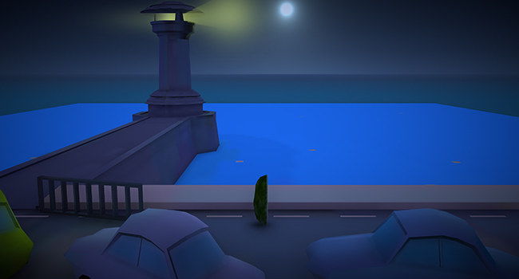
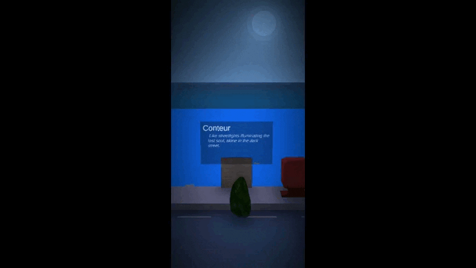
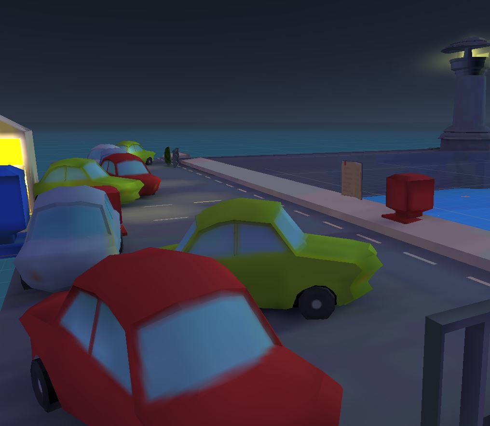

One Touch Story

- Project Name
- One Touch Story
- Platform
- Mobile (Android)
- Role
- Solo dev.
- Development time
- Approx. 45h
A 1 touch narrative game
One touch story is a mobile application I made using Unity.
The intention was to create the complete loop of a short interactive story on cell phones in portrait format, while aiming a smooth experience and intuitive controls.
The player has to move his Avocado through several levels, he will encounter books, allowing to read parts of texts. Each level starts with a cutscene, and the level ends when the player finds the avocado pit.
3C's are :
- Camera : track-guided camera, following the player through autorized corridor
- Character: An Avocado that moves, interact and collect
- Controller: Touch screen. Movement via a floating stick attached to the bottom of the screen: Left, right, towards and move away from the camera
Tasks Overview
Notable Milestones
- Scene manager using Asyncronous scene loader
- Player controller
- Camera system using Unity Cinemachine
- Soft narrative feature
- Low Poly Modeling using Blender
- Integration and Unity ProBuilder use
- Progression tracking
- Graphic settings
Goal of the project
I wanted to put the knowledge I had gained from my studies into practice, to put it into a project with a reduced scope, which would have an end.
I worked with C#, Blender 2.80 and Unity3D.
I was happy with the result given the time spent on the project and decided not to expand the scope further.
An attempt was made to include a mini-game was made, the idea was to integrate it after each dialogue. The problem was that it was difficult to integrate them properly in a justified way and it represented too much extra development time for me.
Unfinished mini-game
Adapting the screen-ratio
After being surprised by the use of the portrait format by the smartphone opus of Mario kart, I wanted to try this format.
It proved to be practical because it allows to obtain an illusion of disbelief rather quickly since the field of vision is reduced. I took the opportunity to try to compose with this format by placing a headlight on this scene.
Making the scenes
Due to the scope of the project, and as I wanted to put the focus on the overall development, the level design is rather simple, guiding the player through the level building and actual props.
I did a prototype of each level with ProBuilder and Progrid, once the progression was complete I started working on the props of every scenes with blender 3d for the more complex.
I had some guidelines though:
- The lighthouse serves as a landmark, it is the central visual element in the scenes
- Take advantage of the sea to reduce the number of assets needed
- Aim for a scene that doesn't require many props to look coherent (beach)
- Guide the player with the help of the camera system and some props (cars, barriers)
I enjoyed working on cinemachine, this tool allowed me to create a cutscene system as well as a player camera, to then alternate between them in a fluid way. It was for me a prerequisite to be able to present the environment to the player at the beginning of the level.

Opening Level animation

Some props on level 3